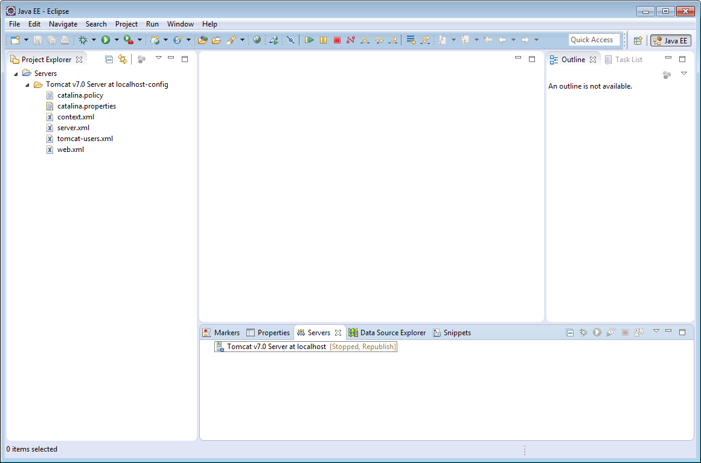
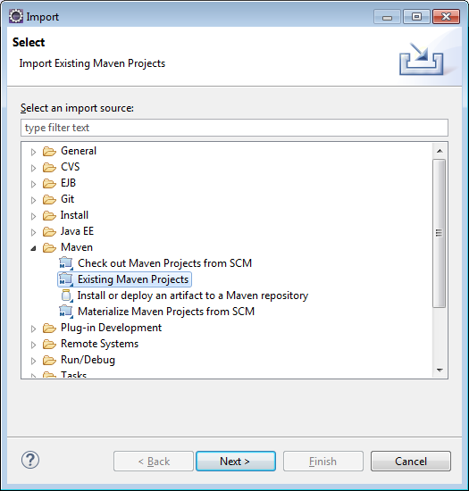
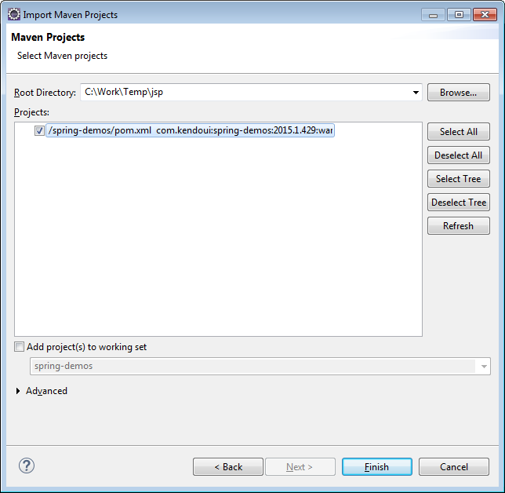
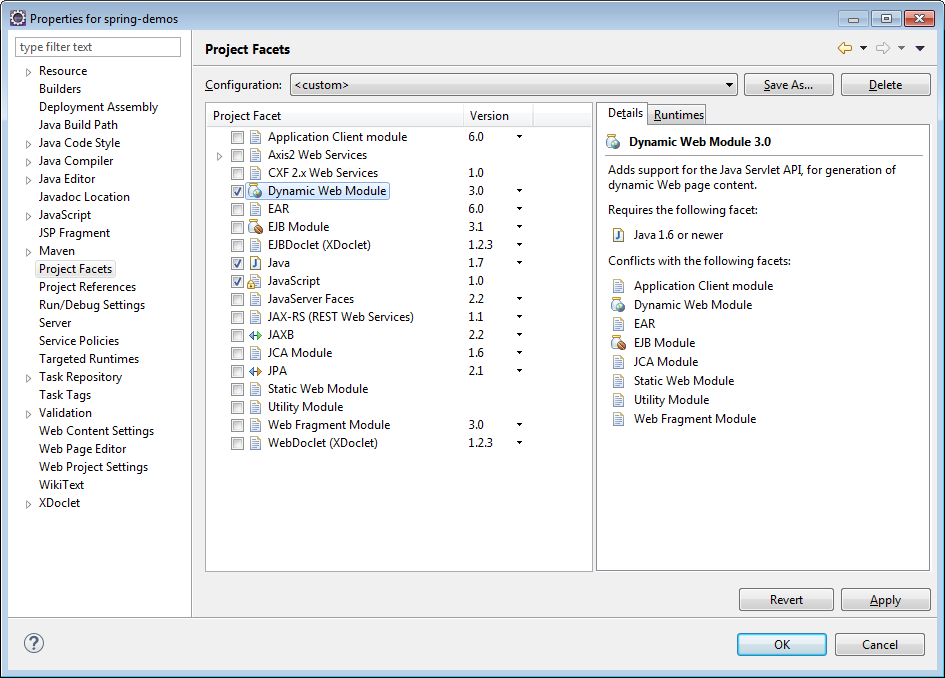
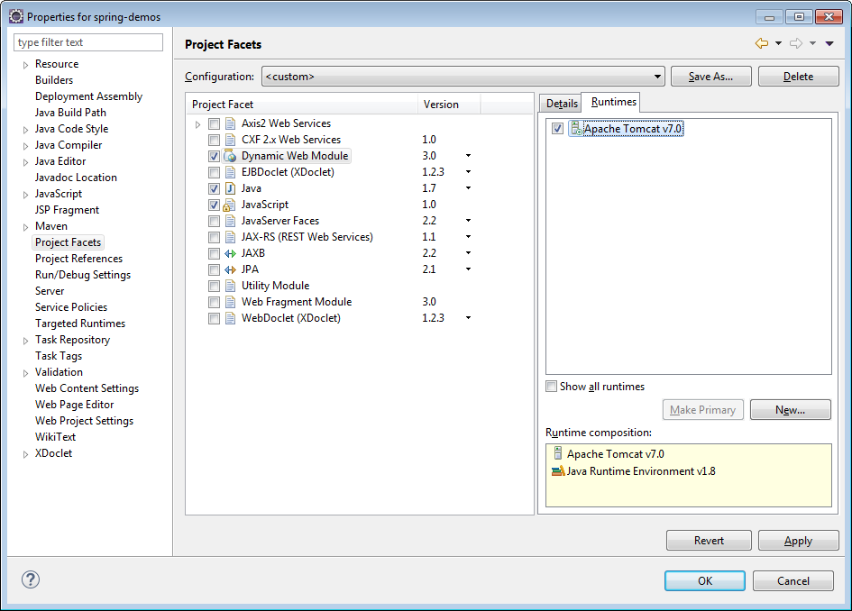

Downloading and Installing Telerik UI for JSP
The distribution files contain the following:
- \js - Kendo UI minified JavaScript files.
- \styles - Kendo UI minified CSS files and background images used by the themes.
- \wrappers\jsp\kendo-taglib - Telerik UI for JSP jar files.
- \wrappers\jsp\spring-demos - a sample JSP Spring MVC application.
Running the sample application
Requirements
- JDK 1.8 or 1.7
- Eclipse for Enterprise Developers (J2EE support) - Luna, Kepler or newer
- Maven support for Eclipse - m2e
- Configured server (tested with Tomcat 7)

You can find a sample JSP Spring MVC application in the \wrappers\jsp\spring-demos folder.
Steps to run the project
- Extract the Telerik UI for JSP package.
- Start Eclipse.
- Choose "File -> Import".
-
Choose "Maven -> Existing Maven Projects". Click "Next". If you don't see that option make sure your Eclipse has Maven support installed.

-
Browse to the location where you extracted Telerik UI for JSP. Then pick "wrappers\jsp\spring-demos" for "Root Directory". Click "Finish".

- Right-click "spring-demos" in Eclipse Project Explorer. Pick "Properties".
- In the properties window pick "Project Facets".
-
From the "Project Facets" menu select "Dynamic Web Module".

-
Click the "Runtimes" tab. Pick a runtime (Tomcat 7 for example).

- Press "OK" to close the "Properties" window.
- Right-click "spring-demos" in Eclipse Project Explorer. Pick "Run As -> Run on server".
Using Kendo UI in JSP application
- Create a new "Dynamic Web Project" from Eclipse or open an existing one.
- Add \wrappers\jsp\kendo-taglib\kendo-taglib-[version].jar to project's /WebContent/WEB-INF/lib folder.
-
Copy the Kendo UI JavaScript files from the \js folder of the installation to the WebContent/resources/js folder of your application.
If you want to use CDN skip steps 3, 4 and 5 and check the Using CDN section.
- Copy the Kendo UI CSS files and folders from the \styles folder of the installation to the WebContent/resources/styles folder of your application. If you want to use only one theme copy kendo.common.min.css, the theme file (e.g. kendo.default.min.css), the theme folder (e.g. Default) and the textures folder.
- Add a JSP page.
- Right-mouse click on WebContent folder
- Select New -> JSP file
- Enter file name and click Finish
-
Configure your page to include the Kendo UI Web JavaScript and CSS files to the page:
<link href="resources/styles/kendo.common.min.css" rel="stylesheet" type="text/css" /> <link href="resources/styles/kendo.default.min.css" rel="stylesheet" type="text/css" /> <script src="resources/js/jquery.min.js"></script> <script src="resources/js/kendo.web.min.js"></script> -
Configure your page to include the Kendo UI DataViz JavaScript and CSS files. Important: If you want to use Kendo UI Web and DataViz at the same time you should include kendo.all.min.js instead of kendo.web.min.js and kendo.dataviz.min.js. You can also create a custom JavaScript file using the Custom Download Builder.
<link href="resources/styles/kendo.common.min.css" rel="stylesheet" type="text/css" /> <link href="resources/styles/kendo.dataviz.min.css" rel="stylesheet" type="text/css" /> <link href="resources/styles/kendo.dataviz.default.min.css" rel="stylesheet" type="text/css" /> <script src="resources/js/jquery.min.js"></script> <script src="resources/js/kendo.dataviz.min.js"></script> -
Add taglib mapping to the kendo tags
<%@taglib prefix="kendo" uri="http://www.kendoui.com/jsp/tags"%> -
Use any Kendo UI HtmlHelper extension:
<kendo:datePicker name="datePicker"></kendo:datePicker>
Using CDN
You can include the JavaScript and CSS files from CDN. Don't forget to specify the version (e.g. 2012.2.710)
<link href="http://cdn.kendostatic.com/<VERSION>/styles/kendo.common.min.css" rel="stylesheet" type="text/css" />
<link href="http://cdn.kendostatic.com/<VERSION>/styles/kendo.default.min.css" rel="stylesheet" type="text/css" />
<script src="http://code.jquery.com/jquery-1.9.1.min.js"></script>
<script src="http://cdn.kendostatic.com/<VERSION>/js/kendo.all.min.js"></script>
Next Steps
You can watch the videos in the Kendo UI YouTube channel: